Axes#
matplotlib.axes es un módulo que contiene la clase Axes la cual representa una gráfica en una figura. En esta sección únicamente se enlistan las propiedades y algunos métodos de la clase Axes. Para información sobre cómo crear y manipular instancias de la clase Axes consultar Matplotlib.
Warning
Los usuarios no deben inicializar objetos Axes directamente, sino que se deben de utilizar métodos que retornen objetos Axes como los del módulo Pyplot.
Interfaz orienta a objetos#
En esta Interfaz se crean dos objetos fig y ax. Hay dos formas principales de crear estos objetos que se revisan a continuación.
Para los ejemplos de esta sección se utilizará el dataset “flights” de la librería Seaborn, además se agrupan los datos por año para las visualizaciones de un solo axes. Para las figuras con más de un axes se crean dos datasets uno para el años 1950 y otro para 1960.
# Cargar el dataset
flights=sns.load_dataset("flights")
# Agrupar datos por año
yearly_data=flights.groupby('year')['passengers'].sum().reset_index()
# Filtrar datos para 1950 y 1960
flights_1950=flights[flights['year'] == 1950]
flights_1960=flights[flights['year'] == 1960]
1. Usar las funciones plt.figure y plt.axes#
Se pueden crear los objetos directamente con las funciones plt.figure() y plt.axes() y utilizar los métodos de estos objetos para conformar las gráficas:
# Importar módulo
import matplotlib.pyplot as plt
# Crear objetos
fig=plt.figure()
ax=plt.axes()
# Utilizar métodos de ax y/o fig para agregar elementos a la gráfica
ax.method_name()
...
ax.method_name ()
...
# Imprimir la gráfica
plt.show()
Notas:
fig será una instancia de la clase Figure.
ax será una instancia de la clase Axes.
Las grafícas se crean usando los objetos fig y ax y sus métodos, ver Métodos de Figure y Métodos de Axes.
Se pueden agregar tantos métodos como sean necesarios para personalizar las gráficas.
Al finalizar para mostrar la gráfica usar
plt.show().
Ejemplo:
En este ejemplo se utiliza las funciones plt.figure() y plt.axes() para crear una figura con un axes.
# Crear objetos
fig=plt.figure()
ax=plt.axes()
# Graficar los datos
ax.plot(yearly_data['year'],
yearly_data['passengers'],
label='Passengers',
marker='o',
color=azul)
# Añadir elementos a la gráfica
ax.set_xlabel('Año')
ax.set_ylabel('Total de pasajeros')
ax.set_title('Tendencia de total de pasajeros')
ax.legend()
# Show the plot
plt.show()
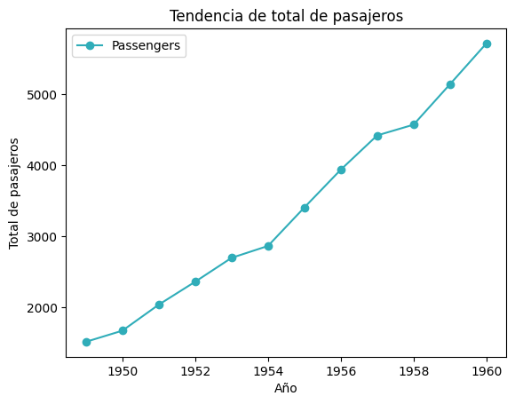
2. Usar la función plt.subplots#
Se recomienda utilizar este método porque es más simple y versátil. En este caso la función plt.subplots() retorna un objeto fig y un objecto ax y posteriormente se pueden utilizar los métodos de estos objetos para conformar las gráficas:
# Importar módulo
import matplotlib.pyplot as plt
# Crear objetos
fig, ax=plt.subplots(nrows=1, ncols=1, [sharey], [sharex])
# Utilizar métodos de ax y/o fig para agregar elementos a la gráfica
ax.method_name()
...
ax. method_name ()
...
# Imprimir la gráfica
plt.show()
Notas:
Se puede indicar cuántas filas y columnas de gráficas tendrá la figura, si no se indican se utilizan los valores por default que es 1 en ambos casos, es decir, una figura con una sola gráfica (un solo axes).
fig será una instancia de la clase Figure
Dependiendo de los argumentos n y m, el objeto ax puede ser:
Las grafícas se crean usando los objetos fig y ax y sus métodos, Métodos de Figure y Métodos de Axes.
IMPORTANTE: En caso de que ax sea ndarray, para utilizar los métodos propios de la clase
Axesse tiene que indicar el índice del elemento usandoax[i]oax[i, j], dependiendo de las dimensiones del array, donde i es el índice de las filas y j es el índice de las columnas, ambos empienzan en cero.Se pueden agregar tantos métodos como sean necesarios para personalizar las gráficas.
Al finalizar para mostrar la gráfica usar
plt.show().
Ejemplo 1:
En este ejemplo se utiliza la función plt.subplots() con los argumentos nrows=1 y ncols=1 para crear una figura con un axes.
# Crear figura y axes
fig, ax=plt.subplots(1, 1)
# Graficar datos
ax.plot(yearly_data['year'],
yearly_data['passengers'],
label='Passengers',
marker='o',
color=azul)
# Añadir elementos a la gráfica
ax.set_xlabel('Año')
ax.set_ylabel('Total de pasajeros')
ax.set_title('Tendencia de total de pasajeros')
ax.legend()
# Imprimir la figura
plt.show()
Ejemplo 2:
En este ejemplo se utiliza la función plt.subplots() con los argumentos nrows=1 y ncols=2 para crear una figura con dos axes.
# Crear figura y axes
fig, axes=plt.subplots(1, 2, figsize=(12, 5), sharey=True)
# Graficar datos de 1950
axes[0].bar(flights_1950['month'], flights_1950['passengers'], color=azul)
axes[0].set_title('Pasajeros en 1950')
axes[0].set_xlabel('Mes')
axes[0].set_ylabel('Números de Pasajeros')
axes[0].tick_params(axis='x', rotation=45)
# Graficar datos de 1960
axes[1].bar(flights_1960['month'], flights_1960['passengers'], color=cafe)
axes[1].set_title('Pasajeros en 1960')
axes[1].set_xlabel('Mes')
axes[1].tick_params(axis='x', rotation=45)
# Imprimir la figura
plt.tight_layout()
# Imprimir la figura
plt.show()
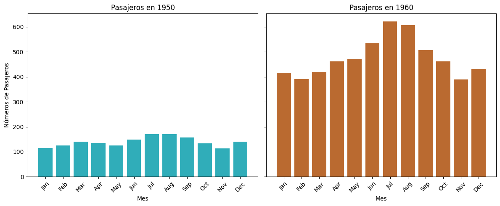
Atributos#
En matplotlib no se puede acceder directamente a los atributos por medio de la notación punto. Para modificar o retornar los atributos es necesario usar los métodos Axes.set_* y Axes.get_*. A continuación se presenta una tabla de los atributos de Axes.
Note
Los atributos se pueden definir como parámetros dentro de la función plt.axes(). Para ver los tipos de datos de los argumentos o las maneras de definirlos consultar la tabla de parámetros.
Note
Muchos atributos son heredados de la clase Artist.
Atributo |
Descripción |
|---|---|
Indica como se ajusta el tamaño del gráfico cuando cambia el aspecto. |
|
Filtro del gráfico. |
|
Transparencia del gráfico (0 es transparente, 1 es opaco). |
|
La posición del gráfico dentro del área de dibujo. |
|
Indica si el gráfico es animado o no. |
|
Relación de aspecto del gráfico (‘auto’, ‘equal’, numérico). |
|
Indica el estatus de la autoescala del gráfico. |
|
Indica el estatus de la autoescala del eje x. |
|
Indica el estatus de la autoescala del eje y. |
|
Posición del gráfico. |
|
Indica si los ejes se dibujan debajo o encima del gráfico. |
|
Proporción de aspecto de la caja de los ejes. |
|
Indica el área de recorte para los gráficos. |
|
Indica si se aplican recortes al gráfico. |
|
Indica la ruta de recorte para los gráficos. |
|
Color de fondo del gráfico. |
|
Referencia a la figura contenedora del gráfico. |
|
Indica si hay eventos de navegación para avanzar. |
|
Indica si el marco de los ejes es visible. |
|
ID único para el gráfico, útil para identificaciones. |
|
Indica si los ejes participan en el diseño de la figura. |
|
Etiqueta del gráfico, utilizada en leyendas. |
|
Indica si están activos los eventos al pasar el ratón sobre el gráfico. |
|
Indica si está activa la navegación con el gráfico. |
|
Define el modo de navegación (pan, zoom). |
|
Efectos de estilo aplicados a los gráficos. |
|
Habilita la selección de elementos en el gráfico. |
|
Posición del gráfico en la figura. |
|
´Ciclo de propiedades (colores, estilos) para gráficos. |
|
Define cuándo rasterizar según el orden z. |
|
Indica si el gráfico se rasteriza. |
|
Indica si se debe de compartir el eje x con otra gráfica. |
|
Indica si se debe de compartir el eje y con otra gráfica. |
|
Parámetros para dar un efecto de boceto al gráfico. |
|
Parámetros para dar un efecto de boceto al gráfico. |
|
Ajuste de las coordenadas a los píxeles más cercanos. |
|
Especifica la posición del gráfico en una cuadrícula. |
|
Título del gráfico. |
|
Transformación aplicada a los datos del gráfico. |
|
URL asociada al gráfico, útil para interactividad. |
|
Indica si el gráfico es visible. |
|
Límites del eje X (inferior, superior). |
|
Etiqueta del eje X. |
|
Límite de valores del eje X (inferior, superior).. |
|
Margen adicional alrededor del eje X. |
|
Escala del eje X (lineal, logarítmica, etc.). |
|
Etiquetas de los ticks en el eje X. |
|
Posiciones de los ticks en el eje X. |
|
Límites del eje Y (inferior, superior). |
|
Etiqueta del eje Y. |
|
Límite de valores del eje Y (inferior, superior). |
|
Margen adicional alrededor del eje Y. |
|
Escala del eje Y (lineal, logarítmica, etc.). |
|
Etiquetas de los ticks en el eje Y. |
|
Posiciones de los ticks en el eje Y. |
|
Orden de dibujo del gráfico sobre otros elementos. |
Métodos#
A continuación se presentan los métodos del objeto axes.
Gráficos Básico#
Funciones útiles para crear gráficas básicas.
Líneas y marcadores#
Métodos útiles para gráficas que involucran líneas y marcadores, como gráficas de líneas y gríficas de dispersión.
Función |
Descripción |
|---|---|
Axes.errorbar(x, y, yerr=None, xerr=None, fmt=’’, …) |
Grafica x contra y como línea o markers, junto con errorbars. Los errores se indican como escalar (el mismo para todas las observaciones), como 1D |
Axes.eventplot(positions, orientation=’horizontal’, …) |
Grafica líneas paralelas idénticas en las posiciones dadas. |
Axes.loglog(*args, **kwargs) |
Crea una gráfica con escala logarítmica en los ejes x e y. |
Axes.plot(*args, scalex=True, scaley=True, data=None, **kwargs) |
Grafica y versus x como líneas y/o marcadores. |
Axes.scatter(x, y, s=None, c=None, marker=None, cmap=None, norm=None, vmin=None, vmax=None, alpha=None, linewidths=None, …) |
Realiza una gráfica de dispersión dando los valores de los ejes x y y. |
Axes.semilogx(*args, **kwargs) |
Crea un gráfico con escala logarítmica en el eje x. |
Axes.semilogy(*args, **kwargs) |
Crea un gráfico con escala logarítmica en el eje y. |
Axes.stem(*args, linefmt=None, markerfmt=None, basefmt=None, bottom=0, label=None, orientation=’vertical’, data=None) |
Crea un gráfica con rectas verticales para cada observación desde base hasta head, y con un marcador en head. |
Axes.step(x, y, *args, where=’pre’, data=None, **kwargs) |
Crea una gráfica de pasos. |
Notas de Axes.plot#
Axes.plot: Realiza una gráfica dando los valores de los ejes x y x, ya sean líneas o puntos.
# Sintaxis de llamada
ax.plot([x], y, [fmt], *, data=None, **kwargs)
ax.plot([x], y, [fmt], [x2], y2, [fmt2], ..., **kwargs)
Parámetros:
x, y -
array-likeoscalar: Coordenadas de los puntos horizontales y verticales, respectivamente. Si no se especifica x será un rango de 0 alen(y) - 1.data -
indexable object: Objeto que se pueda aplicarobj['label']y retorne un 1Darray-like, lo más común que sea unDataFrame.fmt -
str: Es una cadena de formato, para indicar cierto formato que debe de tener la gráfica especificamente, el tipo de linea, tipo de marker y el color de los mismos. Ver Cadenas de Formato (fmt).**kwargs: Propiedades de Line2D.
Parámetros en la segunda forma de llamar la función:
xi, yi -
array-likeoscalar: Cordenadas de los puntos horizontales y verticales, respectivamente.fmti -
str: Es una cadena de formato, para indicar cierto formato que debe de tener la gráfica.
Retorna:
listde Line2D.
Ejemplo:
En este ejemplo se utiliza directamente la función plt.plot() para crear una figura con un axes, además se hacen llamadas a las funciones plt.xlabel(), plt.ylabel(), plt.title() y plt.legend() para añadir elementos a la gráfica.
fig, ax=plt.subplots(figsize=(8, 6))
# Graficar los datos
ax.plot(yearly_data['year'],
yearly_data['passengers'],
marker='o',
color=azul)
# Imprimir la figura
plt.show()
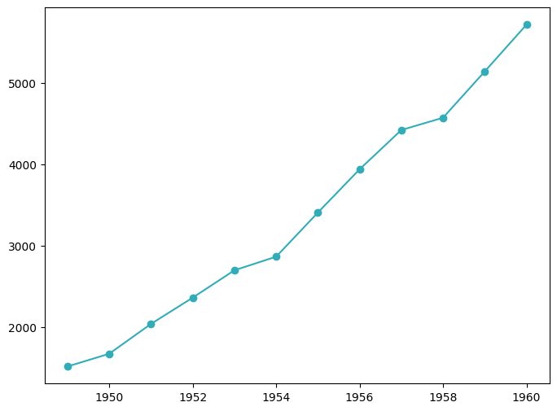
Notas de de Axes.scatter#
Axes.scatter: Realiza una gráfica de dispersión dando los valores de los ejes X y Y.
# Sintaxis de llamada
Axes.scatter(x, y, s=None, c=None, *, marker=None, cmap=None, norm=None, vmin=None,
vmax=None, alpha=None, linewidths=None, edgecolors=None, colorizer=None,
plotnonfinite=False, data=None, **kwargs)
Parámetros:
x, y -
array-likeofloat: Cordenadas de los puntos horizontales y verticales, respectivamente.s -
floatoarray-like: Tamaño de los markers en puntos, al cuadrado.c -
array-like,listdecolorocolor: Color de los markers.scalarosecuenciade números: Esos números serán mapeados con cmap, dependiendo del valor se le asignará un color del mapa de color, los número se emparejarán por posición con los valores de x y y, para determinar qué color usar en cada coordenada. Por lo tanto la longitud de la secuencia debe de ser igual que la de x y y.secuenciadecolor: Colores a usar para cada valor de x y y, se empatan por posición y debe de tener la misma longitud que x y y. Ver Colores.color: Un solo color para usar en todos lo puntos. Ver Colores.Se puede usar los valores de una variable categórica para que cada uno tenga un valor diferente. Ver ColorMap.
marker -
MarkeyStyle: Revisar Markers.cmap -
stroColorMap: Mapa de color. Solo se usa si c es unarray-likedefloat. Ver ColorMap.alpha -
float: Para indicar la opacidad de la gráfica. Es un valor entre 0 y 1, donde 0 es completamente transparente y 1 es completamente opaco.linewidths -
floatoarray-like: Grueso del borde de los markers.edgecolors - {‘face’, ‘none’, None},
colorosecuenciadecolor: Color del borde de los markers. Si es ‘face’ será el mismo que el fondo del marker, si es ‘none’ no tendrá color o se puede especificar el color. Ver Color.**kwargs: Propiedades de los objetos PathCollection.
Retorna:
# Importar el dataset iris
data=sns.load_dataset("iris")
# Crear figura y axes
fig, ax=plt.subplots(figsize=(8, 6))
# Crear scatterplot: petal length vs petal width
scatter=ax.scatter(
data["petal_length"],
data["petal_width"],
c=data["species"].astype('category').cat.codes, # Color por species
s=data["sepal_length"] * 10, # Tamaño proporcional a sepal length
cmap="viridis",
alpha=0.7
)
# Agregar etiquetas, título y leyenda
ax.set_title("Iris Petal Dimensions", fontsize=14)
ax.set_xlabel("Petal Length (cm)", fontsize=12)
ax.set_ylabel("Petal Width (cm)", fontsize=12)
# Crear leyenda para "species"
species_labels=data["species"].unique()
colors=scatter.cmap(np.linspace(0, 1, len(species_labels)))
handles=[plt.Line2D([0], [0], marker="o", color="w", markersize=10, markerfacecolor=colors[i]) for i in range(len(species_labels))]
ax.legend(handles, species_labels, title="Species", loc="upper left")
# Imprimir la figura
plt.tight_layout()
plt.show()
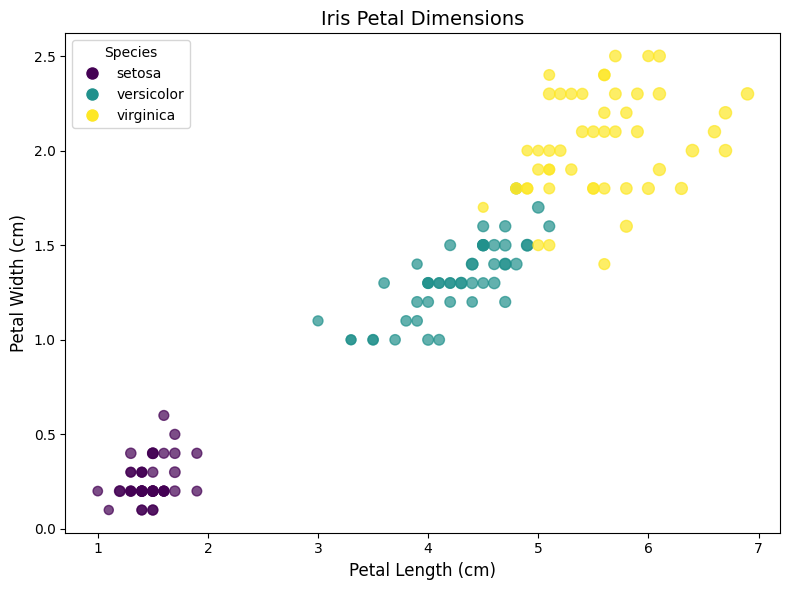
Barras#
Métodos útiles para gráficas de barras, como barras verticales u horizontales.
Función |
Descripción |
|---|---|
Axes.bar(x, height, width=0.8, bottom=None, …) |
Crea una gráfica de barras. |
Axes.bar_label(container, labels=None, …) |
Genera etiquetas para una gráfica de barras. |
Axes.barh(y, width, height=0.8, left=None, …) |
Crea una gráfica de barras horizontales. |
Axes.broken_barh(xranges, yrange, …) |
Grafica una secuencia horizontal de rectángulos. |
Notas de ax.bar#
Axes.bar: Crea una gráfica de barras.
ax.bar(x, height, width=0.8, bottom=None, *, align='center', data=None, **kwargs)
Parámetros:
x -
floatoarray-like: Coordenadas del eje x, pueden ser las categorías a grafícar o solo una etiqueta.height -
floatoarray-like: Valores que tienen la altura de las barras. Tiene que ser de la misma longitud que x.width -
floatoarray-like: Ancho de las barras.bottom -
floatoarray-like: Coordenas de y, de las bases de las barras. Útil en caso de que quieres apilar varios valores.align - {‘center’, ‘edge’}: Alineación de las etiquetas de las barras en la coordenada x.
kwargs: Propiedades de Rectangle.
tick_label-strolistdestr: Para modificar las etiquetas de las barras. Debe ser igual a la longitude de x.xerr,yerr-floatoarray-likede shape (N) o (2, N).Si es un escalar: Agrega +/- el valor a todas las barras.
shape(N): Agrega +/- los valores a cada barra.
shape(2, N): Valores separados para la parte negativa y la parte positiva para cada barra. La primer fila son los negativos y la segunda los positivos.
ecolor -
color: Color de las errorbars.
Retorna:
Patrones útles
# Barras apiladas
ax.bar(df.index, df['col1'])
ax.bar(df.index, df['col2'], bottom=df['col1'])
# Barras de dos cantidades independientes
ax.bar("Cat 1", df["col"].agg_func()) # Usar str con nombre de la categoría
ax.bar("Cat 2", df2["col"].agg_func())
Ejemplo:
En este ejemplo se grafican barras apiladas, para el número de pasajeros en 1950 y 1960.
# Crear figura y axes
fig, ax=plt.subplots(figsize=(8, 6))
# Crear gráfica
ax.bar(flights_1950['month'],
flights_1950['passengers'],
color=azul,
label='1950')
# Crear gráfica apilada
ax.bar(flights_1950['month'],
flights_1960['passengers'],
bottom=flights_1950['passengers'],
color=cafe,
label='1960')
# Añadir leyenda
ax.legend()
# Imprimir gráfica
plt.show()
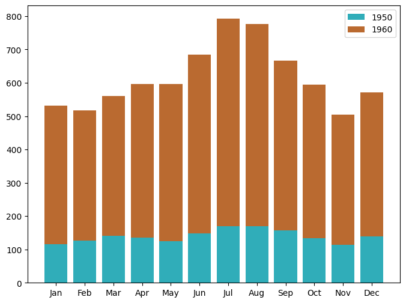
Rectas y áreas#
Métodos útiles para crear rectas en intervalos y áreas.
Warning
Considerar lo siguiente:
Las rectas aquí presentadas son múltiples rectas en un intervalo. Para graficar una única recta revisar funciones en Rectas y Áreas.
Las áreas aquí presentadas son para rellenar áreas entre curvas o gráficas de áreas. Para generar spans (rectángulos para resaltar zonas en gráficas) ver funciones en Rectas y Áreas.
Función |
Descripción |
|---|---|
Axes.fill(*args, data=None, **kwargs) |
Grafica polígonos rellenos. |
Axes.fill_between(x, y1, y2=0, where=None, interpolate=False, step=None, …) |
Rellena el área entre dos curvas horizontales (\(y=f(x)\)). |
Axes.fill_betweenx(y, x1, x2=0, where=None, step=None, interpolate=False, …) |
Rellena el área entre dos curvas verticales (\(x=g(y)\)). |
Axes.hlines(y, xmin, xmax, colors=None, linestyles=’solid’, label=’’, …) |
Grafica líneas horizontales en cada y desde xmin hasta xmax. |
Axes.stackplot(x, *args, labels=(), colors=None, baseline=’zero’, data=None, **kwargs) |
Crea una gráfica de áreas apiladas. |
Axes.vlines(x, ymin, ymax, colors=None, linestyles=’solid’, label=’’, …) |
Grafica líneas verticales en cada x desde ymin hasta ymax. |
Circulares#
Gráficas circulares.
Función |
Descripción |
|---|---|
Axes.pie(x, …) |
Grafica un gráfico circular. |
Gráficos de Bins#
Métodos útiles para visualizar datos en bins como histogramas.
Función |
Descripción |
|---|---|
Axes.hexbin(x, y, …) |
Crea un gráfico de agrupación hexagonal 2D de los puntos x, y. |
Axes.hist(x, bins=None, range=None, density=False, weights=None, cumulative=False, …) |
Calcula y grafica un histograma. |
Axes.hist2d(x, y, bins=10, range=None, density=False, …) |
Crea un gráfico de histograma 2D. |
Axes.stairs(values, edges=None, …) |
Grafica de escalera como una línea con bordes delimitadores o un gráfico relleno. |
Notas de Axes.hist#
Axes.hist: Realiza un histograma.
# Sintaxis de llamada
ax.hist(x, bins=None, *, range=None, density=False, weights=None, cumulative=False,
bottom=None, histtype='bar', align='mid', orientation='vertical', rwidth=None,
log=False, color=None, label=None, stacked=False, data=None, **kwargs)
Parámetros:
x -
array-likeosecuenciadearray-like: Datos de entrada. Si es una secuencia, los arrays pueden ser de diferentes tamaños.bins -
int,secuenciaostr: .int: Número de bins en el rango.secuencia: Define los limites de cada bin. Es inclusivo.str: El nombre de una estrategia para hacer los bins, las posibles opciones son ‘auto’, ‘fd’, ‘doane’, ‘scott’, ‘stone’, ‘rice’, ‘sturges’, o ‘sqrt’.
range -
tupleoNone: Rango de los bins. Ignorado si bins essecuencia. Por default es(x.min(), x.max()).density -
bool: Para indicar que retorne la densidad de probabilidad (eje y entre 0 y 1).cumulative -
bool: Para indicar si realizar el histograma cumulativo. Si es -1 entonces la acumulación es al revés (empieza acumulado y se van restando los nuevos valores).histtype - {‘bar’, ‘barstacked’, ‘step’, ‘stepfilled’}: Tipo de histograma.
align - {‘left’, ‘mid’, ‘right’}: Alineación de las barras.
orientation - {‘vertical’, ‘horizontal’}: Orientación de las barras.
stacked -
bool: Para indicar, en caso de múltiples datos, que las barras se apilen.kwargs: Propiedades de Patch.
Retorna:
n -
arrayolistdearray: VAlores de los bins (alturas de las barras).bins -
array: Extremos de los bins.patches -
BarContainer,listdePolygonolistde esos objetos: Contenedor de los artistas individuales usados para crear el histograma.
Ejemplo:
# Importar el dataset
tips=sns.load_dataset("tips")
# Crear figura y axez
fig, ax=plt.subplots(1, 1, figsize=(8, 6))
# Graficar el histograma
ax.hist(tips['total_bill'], bins=20, color=azul, edgecolor='black', alpha=0.7)
ax.set_title('Histograma de Total Bill', fontsize=14)
ax.set_xlabel('Total Bill ($)', fontsize=12)
ax.set_ylabel('Frecuencia', fontsize=12)
# Imprimir la figura
plt.show()
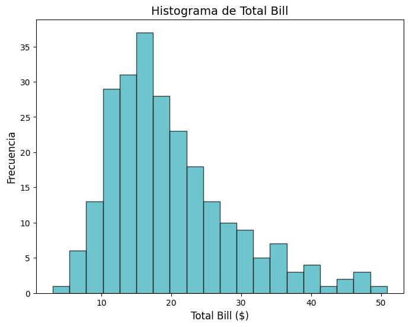
Gráficos de Campos Vectoriales#
Métodos para graficar campos vectoriales.
Función |
Descripción |
|---|---|
Axes.barbs(*args, data=None, **kwargs) |
Grafica un campo 2D de púas. |
Axes.quiver(*args, data=None, **kwargs) |
Grafica un campo 2D de flechas. |
Axes.quiverkey(Q, X, Y, U, label, **kwargs) |
Agrega una clave a una gráfica quiver. |
Axes.streamplot(x, y, u, v, density=1, linewidth=None, color=None, cmap=None, …) |
rafica líneas de corriente de un flujo vectorial. |
Gráficos de Contornos#
Métodos para gráficar de contornos. Útiles para representaciones 2D de gráficas 3D.
Función |
Descripción |
|---|---|
Axes.clabel(CS, levels=None, **kwargs) |
Etiqueta un una gráfica de contorno. |
Axes.contour(*args, data=None, **kwargs) |
Grafica líneas de contorno. |
Axes.contourf(*args, data=None, **kwargs) |
Grafica contornos rellenos. |
Gráficos Espectrales#
Métodos útiles para diagramas espectrales, utilizados para analizar frecuencias y estructuras cíclicas.
Función |
Descripción |
|---|---|
Axes.acorr(x, …) |
Grafica la autocorrelación de x. |
Axes.angle_spectrum(x, …) |
Grafica el espectro de ángulos. |
Axes.cohere(x, y, …) |
Grafica la coherencia entre x y y. |
Axes.csd(x, y, …) |
Grafica la densidad espectral cruzada. |
Axes.magnitude_spectrum(x, …) |
Grafica el espectro de magnitudes. |
Axes.phase_spectrum(x, …) |
TGrafica el espectro de fases. |
Axes.psd(x, …) |
Grafica la densidad espectral de potencia. |
Axes.specgram(x, …) |
Grafica un espectrograma. |
Axes.xcorr(x, y, …) |
Grafica la correlación cruzada entre x y y. |
Gráficos Estadísticos#
Métodos útiles para graficar información estadística como boxplots y distribuciones acumuladas.
Función |
Descripción |
|---|---|
Axes.boxplot(x, …) |
Genera una gráfica de caja y bigotes. Retorna un diccionario que contiene las siguientes keys: boxes, medians, whiskers, caps, fliers, means. |
Axes.bxp(bxpstats, positions=None, widths=None |
Función de grafica para diagramas de caja y bigotes. |
Axes.ecdf(x, weights=None, …) |
Calcula y grafica la función de distribución acumulada de x. |
Axes.violin(vpstats, …) |
Función de grafica para graficas de violín. |
Axes.violinplot(dataset, …) |
Genera una gráfica de violín. |
Notas de plt.boxplot#
Axes.boxplot: Crea un boxplot por cada columna que se le pase.
Axes.boxplot(x, *, notch=None, sym=None, vert=None, orientation='vertical', whis=None, positions=None, widths=None, patch_artist=None, bootstrap=None, usermedians=None, conf_intervals=None, meanline=None, showmeans=None, showcaps=None, showbox=None, showfliers=None, boxprops=None, tick_labels=None, flierprops=None, medianprops=None, meanprops=None, capprops=None, whiskerprops=None, manage_ticks=True, autorange=False, zorder=None, capwidths=None, label=None, data=None)
Parámetros:
x -
arrayosecuenciade2D array: Los datos.notch -
bool:Falsepara que se la figura sean rectángulos.Truepara que tengan hendiduras en la media.vert -
bool: Para indicar si los boxes deben ser verticales (True) u horizontales (False).
Retorna:
dict: Diccionario que contiene las siguientes keys: boxes, medians, whiskers, caps, fliers, means.
Ejemplo: En este ejemplo se gráfica el histograma de la columna total_bill del dataset tips.
# Crear la figura
fig, ax=plt.subplots(1, 1, figsize=(8, 6))
# Graficar el histograma
ax.boxplot(tips['total_bill'])
ax.set_title('Boxplot of Total Bill', fontsize=14)
# Imprimir la figura
plt.show()
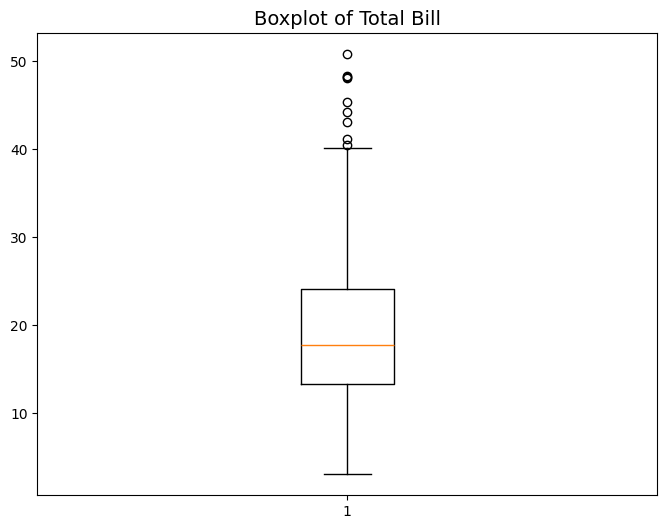
Gráficos de Arreglos#
Métodos para generar visualizaciones a partir de datos contenidos en arreglos.
Función |
Descripción |
|---|---|
Axes.imshow(X, cmap=None, norm=None, …) |
Muestra un array como una imagen. |
Axes.matshow(Z, **kwargs) |
Grafica los valores de un arreglo o matriz 2D como imagen codificada por colores. |
Axes.pcolor(*args, …) |
Crea un diagrama de pseudocolor con una cuadrícula rectangular no regular.. Create a pseudocolor plot with a non-regular rectangular grid. |
Axes.pcolorfast(*args, ..) |
Crea una gráfica de pseudocolor con una cuadrícula rectangular no regular. |
Axes.pcolormesh(*args, …) |
Crea una gráfica de pseudocolor con una cuadrícula rectangular no regular. |
Axes.spy(Z, …) |
Traza el patrón de un arreglo 2D sparse. |
Rectas y Áreas#
Métodos para añadir rectas y áreas rectángulares a gráficas.
Caution
Para añadir n rectas en un intervalo o agregar áreas entre curvas o áreas con formas más complejas (polígonos) revisar métodos de Rectas y áreas.
Función |
Descripción |
|---|---|
Axes.axhline(y=0, xmin=0, xmax=1, **kwargs) |
Añade una línea horizontal a la gráfica. |
Axes.axhspan(ymin, ymax, xmin=0, xmax=1, **kwargs) |
Agrega un área (rectángulo horizontal) a la gráfica. |
Axes.axline(xy1, xy2=None, …) |
Agrega una línea recta infinitamente larga. |
Axes.axvline(x=0, ymin=0, ymax=1, **kwargs) |
Añade una línea vertical a la gráfica. |
Axes.axvspan(xmin, xmax, ymin=0, ymax=1, **kwargs) |
Agrega un tramo vertical (rectángulo) a la gráfica. |
Tip
Es posible añadir una recta con pendiente, sin embargo para ello se usa una función de otro módulo:
from matplotlib.lines import Line2D
Para añadir la recta a una gráfica, se tiene que asignar el objeto a una variable l, posteriormente se debe de utilizar el método .add_line() de Axes, cuyo argumento será el objeto de tipo Line2D.
l=matplotlib.lines.Line2D(xdata, ydata, **kwargs)
ax.add_line(l)
Para más información revisar la documentación.
Ejemplo En el siguiente ejemplo se añade una recta horizontal en y un área entre 1953 y 1954:
fig=plt.figure()
ax=plt.axes()
# Graficar los datos
ax.plot(yearly_data['year'],
yearly_data['passengers'],
marker='o',
color=azul)
# Añadir recta horizontal
ax.axhline(4500, color=cafe)
# Añadir área vertical
ax.axvspan(1953, 1954, color=cafe_claro, alpha=.3)
# Imprimir la figura
plt.show()
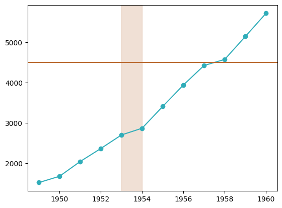
Texto y Anotaciones#
Funciones útiles para añadir texto y otras anotaciones a las gráficas.
Función |
Descripción |
|---|---|
Axes.annotate(text, xy, …) |
Agrega un texto a una gráfica para resaltar algún punto. Es posible agregar una flecha que apunte hacia un punto en particular y se agrege un texto. |
Axes.arrow(x, y, dx, dy, **kwargs) |
Añade una flecha al |
Axes.indicate_inset(bounds, inset_ax=None, …) |
Agrega un indicador insert al |
Axes.indicate_inset_zoom(inset_ax, **kwargs) |
Agrega indicador rectangular insert al |
Axes.inset_axes(bounds, …) |
Agrega un inset hijo |
Axes.secondary_xaxis(location, …) |
Agrega un segundo eje x al |
Axes.secondary_yaxis(location, …) |
Agrega un segundo eje y al |
Axes.table(cellText=None, …) |
Agrega una tabla a un |
Axes.text(x, y, s, fontdict=None, **kwargs) |
Agrega un texto al |
Ejemplo de ax.annotate#
Axes.annotate: Agrega un texto a una gráfica para resaltar algún punto de la gráfica bajo una condición. Es posible agregar una flecha que apunte hacia un punto en particular y se agrege un texto.
# Sintaxis de llamada
Axes.annotate(text, xy, xytext=None, xycoords='data', textcoords=None, arrowprops=None,
annotation_clip=None, **kwargs)
Parámetros:
text -
str: La cadena que se mostará en la gráfica.xy -
secuenciadefloat: Es la posición del punto a resaltar, debe ser la misma escala que usan los ejes.xytext -
secuenciadefloat: Es para indicar la posición del texto, es útil en caso de que en xy se sobre encime con muchas cosas.xycoords -
str,Artist,Transformocallable: Sistema de coordenadas para el argumetno xy. Consultar la documentación para más información.arrowprops -
dict: Es para crear una fecha que una el texto (xytext) con el punto xy, es útil en caso de que moviste de lugar el texto con xytext, se utiliza un diccionario para cambiar las propiedades de la flecha (la key es el nombre de la propiedad values el es valor de la propiedad). Si se quiere la flecha en su formato por default poner un diccionario vacío (con ‘’ odict()). Para ver las posibles keys consultar los parámetros de FancyArrowPatch.**kwargs: Propiedades de Text.
Retorna:
Annotation.
Ejemplo
En este ejemplo se añade el número de pasajeros exactos en el año 1954 por medio de una flecha.
# Crear objetos
fig=plt.figure()
ax=plt.axes()
# Graficar los datos
ax.plot(yearly_data['year'],
yearly_data['passengers'],
marker='o',
color=azul)
# Añadir elementos a la gráfica
ax.set_xlabel('Año')
ax.set_ylabel('Total de pasajeros')
ax.set_title('Tendencia de total de pasajeros')
# Añadir texto en el punto 1954
ax.annotate("2,867",
xy=[1954, 2867],
xytext=[1954, 2000],
arrowprops={"arrowstyle":"->", "color":"gray"})
# Show the plot
plt.show()
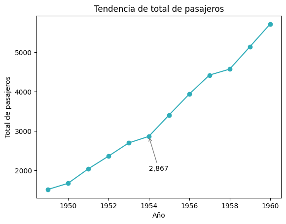
Ejemplo de ax.text#
Axes.text: Agrega texto a un Axes en las coordenadas de x y y.
# Sintaxis de llamada
Axes.text(x, y, s, fontdict=None, **kwargs)
Parámetros:
x, y -
float: Posición en el cual colocar el texto. Los valores son en la misma escala que los ejes. Excepto si se aplica una transformación, con el parámetro transform.s -
str: El texto a mostrar.fontdict -
dict: Diccionario que sirve para especificar la apariencia del texto (propiedades deText), los keys son los nombres de las propiedades y values sus respectivos valores.**kwargs: Propiedades de Text.
Retorna:
Text.
Ejemplo:
En este ejemplo se añade el número de pasajeros exactos en el año 1954.
# Crear objetos
fig=plt.figure()
ax=plt.axes()
# Graficar los datos
ax.plot(yearly_data['year'],
yearly_data['passengers'],
marker='o',
color=azul)
# Añadir elementos a la gráfica
ax.set_xlabel('Año')
ax.set_ylabel('Total de pasajeros')
ax.set_title('Tendencia de total de pasajeros')
# Añadir texto en el punto 1954
ax.text(1954, 2650, "2,867")
# Show the plot
plt.show()
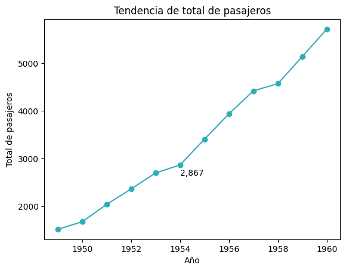
Triangulos no Estructurados#
Métodos para crear gráficas de mallas no estructuradas. Este tipo de mallas se componen de puntos espaciados de manera irregular conectados por elementos triangulares, una aplicación común es visualización de datos geoespaciales.
Función |
Descripción |
|---|---|
Axes.tricontour(*args, **kwargs) |
Grafica líneas de contorno en una cuadrícula triangular no estructurada. |
Axes.tricontourf(*args, **kwargs) |
Grafica regiones de contorno en una cuadrícula triangular no estructurada. |
Axes.tripcolor(*args, …) |
Crea una gráfica de pseudocolor de una cuadrícula triangular no estructurada. |
Axes.triplot(*args, **kwargs) |
Grafica una cuadrícula triangular no estructurada como líneas y/o marcadores. |
Gráficos interactivos#
Métodos útiles para realizar y manipular gráficos interactivos.
Función |
Descripción |
|---|---|
Indica si este |
|
Indica si este |
|
Axes.contains(mouseevent) |
Verifica si el artist contiene el evento mouse. |
Axes.contains_point(point) |
Indica si el “punto” (par de coordenadas de píxeles) está dentro del patch del |
Axes.drag_pan(button, key, x, y) |
Se llama cuando el mouse se mueve durante una operación pan. |
Se llama cuando se completa una operación pan. |
|
Axes.format_coord(x, y) |
Retorna una cadena de formato que formatea las coordenadas x, y. |
Axes.format_cursor_data(data) |
Retorna una representación de cadena de los datos. |
Retorna x formateado como un valor de x. |
|
Retorna y formateado como un valor de y. |
|
Axes.in_axes(mouseevent) |
Indica si el evento dado (en coordenadas de visualización) está en el |
Indica si se solicita a este artist información de contexto personalizada cuando el cursor del mouse se mueve sobre él. |
|
Axes.start_pan(x, y, button) |
Se llama cuando ha comenzado una operación de pan. |
Establecer |
|
Establece si el |
|
Establece el estado del botón de la barra de herramientas de navegación. |
|
Recuperar |
|
Axes.get_cursor_data(event) |
Retorna los datos del cursor para un evento determinado. |
Indica si el |
|
Recupa el estado del botón de la barra de herramientas de navegación -> ‘PAN’, ‘ZOOM’ o |
Limpieza#
Métodos para eliminar la configuración del objeto y limpiar el mismo.
Función |
Descripción |
|---|---|
Axes.cla() |
Limpia el |
Limpiar el |
Otros#
Otros métodos.
Artists#
Métodos útiles para añadir otra clase de elemetos a un axes o consultar los artists en el axes.
Función |
Descripción |
|---|---|
Añade un |
|
Añade un |
|
Axes.add_collection(collection, autolim=True) |
Agrega un |
Axes.add_container(container) |
Agrega un |
Axes.add_image(image) |
Añade un |
Axes.add_line(line) |
Agrega un |
Agrega un |
|
Axes.add_table(tab) |
Agrega un |
Retorna una |
|
Indica si se ha agregado algún artist al |
|
. |
Callbacks#
Métodos para trabajar con callbacks.
Función |
Descripción |
|---|---|
Axes.add_callback(func) |
Agrega una función callback que se llamará cada vez que una propiedad de los |
Llama a todas las callbacks registradas. |
|
Axes.remove_callback(oid) |
Elimina una callback según su id. |
Indica si el artist está “obsoleto” y es necesario volver a dibujarlo para que el resultado coincida con el estado interno del artist. |
Graficado#
Métodos útiles para imprimir (dibujar) la gráfica.
Función |
Descripción |
|---|---|
Axes.draw(renderer) |
Dibuja al artist (y sus hijos) usando el renderizador proporcionado. |
Vuelva a dibujar eficientemente a un solo artist. |
|
Retorna el valor zorder debajo del cual se rasterizarán los artists. |
|
Axes.get_tightbbox(renderer=None, …) |
Retorna el cuadro delimitador ajustado del |
Axes.get_window_extent(renderer=None) |
Retorna el cuadro delimitador del |
Redibuja eficientemente los datos del |
|
Establece el zorder threshold para la rasterización de la salida de gráficos vectoriales. |
Objetos hijos#
Métodos útiles para recuperar objetos hijos de un Artist o Axes.
Función |
Descripción |
|---|---|
Axes.findobj(match=None, include_self=True) |
Encuentra objetos de artist. |
Retorna un |
|
Retorna un |
|
Retorna un |
Personalización#
Funciones útiles para personalizar las gráficar como modificar, añadir o quitar elementos.
Generales#
Métodos generales de personalización.
Función |
Descripción |
|---|---|
Axes.axis(arg=None, /, …) |
Método de conveniencia para obtener o establecer algunas propiedades de los eje. |
Axes.set(*, …) |
Establece varias propiedades del |
Grid#
Métodos para establecer o configurar el grid (líneas de cruadrículas) en las gráficas.
Función |
Descripción |
|---|---|
Axes.grid(visible=None, which=’major’, axis=’both’, **kwargs) |
Configura las líneas de la cuadrícula. |
Ejes#
Métodos útiles para personalización de los ejes en las gráficas.
Autoescala#
Métodos para autoescalamiento y manipulación de los ejes
Función |
Descripción |
|---|---|
Axes.autoscale(enable=True, axis=’both’, tight=None) |
Escala automáticamente la vista de los ejes a los datos (toggle). |
Axes.autoscale_view(tight=None, scalex=True, scaley=True) |
Escala automáticamente los límites de la vista utilizando los límites de datos. |
Axes.margins(*margins, x=None, y=None, tight=True) |
Establece o recupera márgenes de escala automática. |
Axes.relim(visible_only=False) |
Recalcula los límites de datos en función de los artists actuales. |
Al realizar el escalado automático, indica si se deben obedecer todos los |
|
Establecer |
|
Establece si el escalado automático se aplica a cada eje en el siguiente draw o se llama a |
|
Establece si el eje x se escala automáticamente al graficar o mediante |
|
Establezce si el eje y se escala automáticamente al graficar o mediante |
|
Establece el padding de los límites de datos del eje x antes del escalado automático. |
|
Establece el padding de los límites de datos del eje y antes del escalado automático. |
|
Recuperar |
|
Retorna |
|
Indica si el eje x tiene escala automática. |
|
Indica si el eje y tiene escala automática. |
Compartir ejes#
Métodos para compartir un eje entre diferentes gráficas o indicar que una gráfica tenga dos ejes diferentes en la misma dimensión.
Función |
Descripción |
|---|---|
Axes.sharex(other) |
Comparte el eje x con other. |
Axes.sharey(other) |
Comparte el eje y con other. |
Crea un |
|
Crea un |
|
Recuperar |
|
Retorna una view inmutable en el x-axes Grouper compartido. |
|
Retorna una view inmutable en el y-axes Grouper compartido. |
Notas de twinx()
Se utiliza de la siguiente forma:
# Uso de twinx()
ax2=ax1.twinx()
ax2 tendrá el mismo eje x que ax1.
Posteriormente se puede usar ax2 para agregar una capa a la gráfica de ax1, pero ax2 tendrá su propio eje y, la forma como se declara
ax2.plot()es igual, se deben de especificar ambos valores del eje x y y.En ambos
Axesx debe tener los mismo valores.
Escala#
Métodos útiles para establecer o retornar la escala de los ejes de manera indivual.
Función |
Descripción |
|---|---|
Establecer |
|
Axes.set_xscale(value, **kwargs) |
Establece la escala del eje x. |
Axes.set_yscale(value, **kwargs) |
Establece la escala del eje y. |
Recuperar |
|
Retorna la escala del eje x (como una cadena). |
|
Retorna la escala del eje y (como una cadena). |
Ejemplo
En este ejemplo se ajustan las escalas en ambos ejes a una escalar logarítmica para que los datos se puedan visualizar de mejor manera.
# Importar dataset
planets=sns.load_dataset("planets")
# Crear gráfica
fig, ax=plt.subplots(figsize=(8, 6))
ax.scatter(planets['orbital_period'], planets['distance'], c=azul, alpha=0.3)
# Ajustar escalar en ambos ejes
ax.set_xscale('log')
ax.set_yscale('log')
# Imprimir la figura
plt.show()
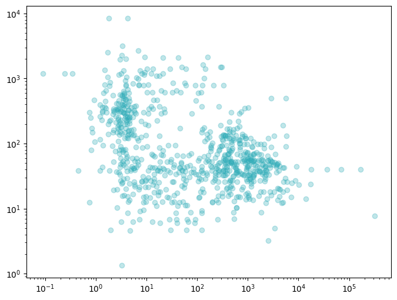
Límites y dirección#
Métodos para establecer los límites de los ejes, es decir, el rango de valores en los ejes.
Función |
Descripción |
|---|---|
Invierte el eje x. |
|
Invierte el eje y. |
|
Axes.update_datalim(xys, updatex=True, updatey=True) |
Extiende el |
Indica si el eje x está orientado en la dirección “inversa”. |
|
Indica si el eje y está orientado en la dirección “inversa”. |
|
Establecer |
|
Axes.set_xbound(lower=None, upper=None) |
Establece los límites numéricos inferior y superior del eje x. |
Axes.set_xlim(left=None, right=None, …) |
Establece los límites de vista del eje x. |
Axes.set_ybound(lower=None, upper=None) |
Establece los límites numéricos inferior y superior del eje y. |
Axes.set_ylim(bottom=None, top=None, …) |
Establece los límites de vista del eje y. |
Recuperar |
|
Retorna los límites inferior y superior del eje x, en orden creciente. |
|
Retorna los límites de vista del eje x. |
|
Retorna los límites inferior y superior del eje y, en orden creciente. |
|
Retorna los límites de vista del eje y. |
Proyección en otras escalas#
Métodos para realizar transformaciones en la escala de los ejes.
Función |
Descripción |
|---|---|
Retorna la relación de aspecto de los datos escalados. |
|
Axes.get_xaxis_text1_transform(pad_points) |
. |
Axes.get_xaxis_text2_transform(pad_points) |
. |
Axes.get_xaxis_transform(which=’grid’) |
Recupera la transformación utilizada para dibujar etiquetas, ticks y líneas de cuadrícula del eje x. |
Axes.get_yaxis_text1_transform(pad_points) |
. |
Axes.get_yaxis_text2_transform(pad_points) |
. |
Axes.get_yaxis_transform(which=’grid’) |
Recupera la transformación utilizada para dibujar etiquetas, ticks y líneas de cuadrícula del eje y. |
Retorna el nombre del Axes. |
Relación de aspecto#
Métodos para establer la relación entre los ejes de la gráfica.
Función |
Descripción |
|---|---|
Axes.apply_aspect(position=None) |
Ajusta el |
Establecer |
|
Axes.set_adjustable(adjustable, share=False) |
Establece cómo el |
Axes.set_aspect(aspect, adjustable=None, anchor=None, share=False) |
Establece la relación de aspecto de la escala de los ejes, es decir, escala y/x. |
Axes.set_box_aspect(aspect=None) |
Establece la relación entre la altura y el ancho del |
Recuperar |
|
Indica si el |
|
Retorna la relación de aspecto de la escala de los ejes. |
|
Retorna la relación entre la altura y el ancho del |
Ticks#
Métodos útiles para retornar o establecer los ticks del axes.
Función |
Descripción |
|---|---|
Axes.locator_params(axis=’both’, tight=None, **kwargs) |
Gestiona el comportamientos de los icks principales. |
Elimina los ticks menores del |
|
Muestra los ticks menores en el |
|
Axes.tick_params(axis=’both’, **kwargs) |
Modifica la apariencia de los ticks, las etiquetas de los ticks y las líneas de cuadrícula. |
Axes.ticklabel_format(*, axis=’both’, style=’’, scilimits=None, useOffset=None, useLocale=None, useMathText=None) |
Configura el |
Axes.xaxis_date(tz=None) |
Configura los ticks y sus etiquetas en el eje para tratar los datos a lo largo del eje x como fechas. |
Axes.yaxis_date(tz=None) |
Configura los ticks y sus etiquetas en el eje para tratar los datos a lo largo del eje y como fechas. |
Establecer |
|
Axes.set_xticklabels(minor=False, which=None) |
Establece los ticks del eje x. Está desaconsejado el uso de este método. |
Axes.set_yticklabels(minor=False, which=None) |
Establece los ticks del eje y. Está desaconsejado el uso de este método. |
Axes.set_xticks(ticks, labels=None, …) |
Establece las ubicaciones de loss ticks del eje x, opcionalmente, las etiquetas de los mismos. |
Axes.set_yticks(ticks, labels=None, …) |
Establece las ubicaciones de las ticks del eje y, opcionalmente, las etiquetas de los mismos. |
Recuperar |
|
Retorna las líneas de cuadrícula del eje x como un |
|
Retorna las etiquetas de los ticks principales del eje x, como |
|
Retorna las etiquetas de los ticks menores del eje x, como |
|
Axes.get_xticklabels(minor=False, which=None) |
Recupera las etiquetas de los ticks del eje x. |
Axes.get_xticklines(minor=False) |
Retorna las líneas de ticks del eje x como |
Axes.get_xticks(*, minor=False) |
Retorna las ubicaciones de los ticks del eje x en coordenadas de los datos. |
Retorna las líneas de la cuadrícula del eje y como |
|
Retorna las etiquetas de los ticks principales del eje y, como |
|
Retorna las etiquetas de los ticks menores del eje y, como |
|
Axes.get_yticklabels(minor=False, which=None) |
Retorna las etiquetas de los ticks del eje y. |
Axes.get_yticklines(minor=False) |
Retorna las líneas de los ticks del eje y como |
Axes.get_yticks(*, minor=False) |
Retorna las ubicaciones de los los ticks del eje y en coordenadas de los datos. |
Patrones útiles:
# modificar parámetros generales de los ticks
ax.tick_params('y', **kwargs)
# Girar etiquetas de los ticks del eje _x_
ax.bar(df.index, df['col'])
ax.set_xticklabels(df.index, rotation=90)
Ejemplo:
En este ejemplo se modifican los ticks del eje y. Por default, en esa gráfica, se muestran los ticks del 2,000 al 5,000, con un paso de 1,000. Con esta nueva configuración se muestran desde 1,000 hasta 6,000 con un paso de 500.
# Crear figura y axes
fig, ax=plt.subplots(1, 1)
# Graficar datos
ax.plot(yearly_data['year'],
yearly_data['passengers'],
label='Passengers',
marker='o',
color=azul)
ax.set_yticks(list(range(1000, 6500, 500)))
# Show the plot
plt.show()
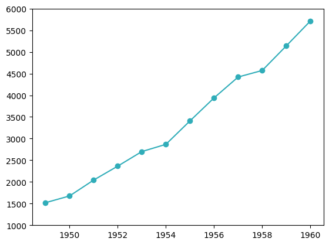
Unidades#
Métodos útiles para modificar las unidades de los ejes.
Función |
Descripción |
|---|---|
Convierte x usando el tipo de unidad del eje x. |
|
Convierte y usando el tipo de unidad del eje y. |
|
Indica si las unidades están establecidas en cualquier eje. |
Visualización#
Métodos para retornar o establecer ciertas características de la apariencia de la gráfica.
Tip
Para ocultar ejes ver también parámetro option del método Axes.axis().
Función |
Descripción |
|---|---|
Establecer |
|
Oculta todos los componentes visuales de los ejes x y y. |
|
Muestra todos los componentes visuales de los ejes x y y. |
|
Establece si los ticks de los ejes y las líneas de cuadrícula están por encima o por debajo de los artists. |
|
Axes.set_facecolor(color) |
Establece el facecolor del |
Establece si el patch rectangular del |
|
Recuperar |
|
Indica si los tick de los ejes y las líneas de cuadrícula están por encima o por debajo de la mayoría de los artists. |
|
Recupera el facecolor del |
|
Indica si el patch rectangular del |
Leyenda#
Métodos para añadir leyendas a las gráficas o manipular las mismas.
Caution
Para que una leyenda se coloque correctame se debió definir el parámetro label en las llamadas a las gráficas.
Función |
Descripción |
|---|---|
Retorna la instancia |
|
Axes.get_legend_handles_labels(legend_handler_map=None) |
Retorna los identificadores y etiquetas de la leyenda. |
Axes.legend(*args, **kwargs) |
Coloca una leyenda en el |
Posición#
Métodos para establecer o retornar la posición del Axes y otros elementos.
Función |
Descripción |
|---|---|
Establecer |
|
Axes.set_anchor(anchor, share=False) |
Define la ubicación del anchor. |
Axes.set_axes_locator(locator) |
Establece el |
Axes.set_position(pos, which=’both’) |
Establece la posición del |
Axes.set_subplotspec(subplotspec) |
Establece el |
Recuperar |
|
Recupera la ubicación de anchor. |
|
Retorna el axes_locator. |
|
Axes.get_position(original=False) |
Retorna la posición del |
Retorna el |
|
Restablece la posición activa a la posición original. |
Títulos y etiquetas#
Métodos para establecer o retornar títulos y etiquetas.
Función |
Descripción |
|---|---|
Axes.label_outer(remove_inner_ticks=False) |
Muestra solo sólo las etiquetas “externas” y las etiquetas de ticks. |
Establecer |
|
Axes.set_title(label, fontdict=None, loc=None, pad=None, …) |
Establece un título para el |
Axes.set_xlabel(xlabel, fontdict=None, labelpad=None, …) |
Establece la etiqueta para el eje x. |
Axes.set_ylabel(ylabel, fontdict=None, labelpad=None, …) |
Establece la etiqueta para el eje y. |
Recuperar |
|
Axes.get_title(loc=’center’) |
Retorna el título del |
Retorna la xlabel. |
|
Retorna la ylabel. |
Patrones útiles:
# Establecer etiqueta del eje x
ax.set_xlabel('x label')
# Establecer etiqueta del eje y
ax.set_ylabel('y label')
# Establecer título
ax.set_title('title')
Funciones útiles#
A continuación se presentan algunas funciones útiles al trabajar con instancias de la clase Axes.
plt.gca( ): Retorna elAxesactual., si no hay uno entonces crea uno.